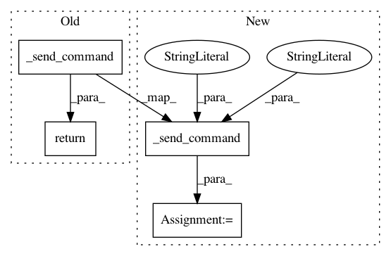

fe4757defb963f428f75f65bfbbf36a88194d72e,flow/utils/aimsun/api.py,FlowAimsunAPI,get_vehicle_static_info,#FlowAimsunAPI#Any#,218
Before Change
:param veh_id:
:return:
return self._send_command(ac.VEH_GET_STATIC, values=[veh_id])
def get_vehicle_tracking_info(self, veh_id):
After Change
static_info = aimsun_struct.StaticInfVeh()
(static_info.report,
static_info.idVeh,
static_info.type,
static_info.length,
static_info.width,
static_info.maxDesiredSpeed,
static_info.maxAcceleration,
static_info.normalDeceleration,
static_info.maxDeceleration,
static_info.speedAcceptance,
static_info.minDistanceVeh,
static_info.giveWayTime,
static_info.guidanceAcceptance,
static_info.enrouted,
static_info.equipped,
static_info.tracked,
static_info.keepfastLane,
static_info.headwayMin,
static_info.sensitivityFactor,
static_info.reactionTime,
static_info.reactionTimeAtStop,
static_info.reactionTimeAtTrafficLight,
static_info.centroidOrigin,
static_info.centroidDest,
static_info.idsectionExit,
static_info.idLine) = self._send_command(
ac.VEH_GET_STATIC,
in_format="i",
values=(veh_id,),
out_format="i i i f f f f f f f f f f i i i ? f f f f f i i i i")
def get_vehicle_tracking_info(self, veh_id):
Return the tracking information of the specified vehicle.
In pattern: SUPERPATTERN
Frequency: 3
Non-data size: 4
Instances
Project Name: flow-project/flow
Commit Name: fe4757defb963f428f75f65bfbbf36a88194d72e
Time: 2018-12-26
Author: akreidieh@gmail.com
File Name: flow/utils/aimsun/api.py
Class Name: FlowAimsunAPI
Method Name: get_vehicle_static_info
Project Name: flow-project/flow
Commit Name: fe4757defb963f428f75f65bfbbf36a88194d72e
Time: 2018-12-26
Author: akreidieh@gmail.com
File Name: flow/utils/aimsun/api.py
Class Name: FlowAimsunAPI
Method Name: get_vehicle_tracking_info
Project Name: flow-project/flow
Commit Name: 721232c090c316b5cdf4bb9b12291b4c3608a705
Time: 2019-01-11
Author: y.zeinali@gmail.com
File Name: flow/utils/aimsun/api.py
Class Name: FlowAimsunAPI
Method Name: get_traffic_light_state